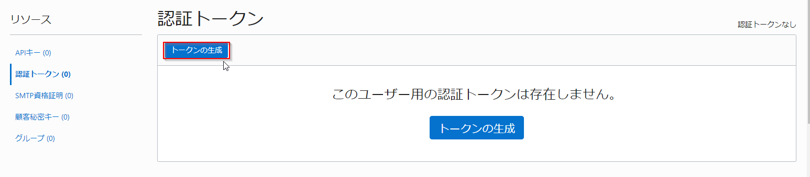
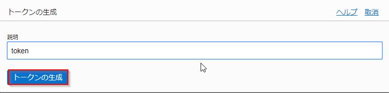
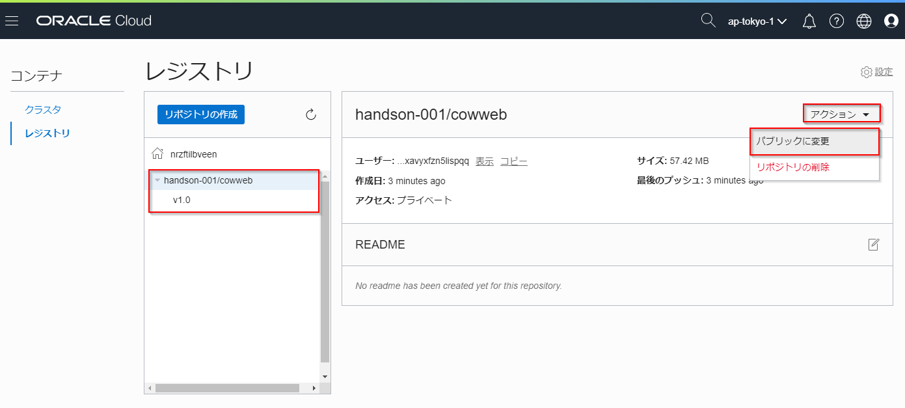

OKEでアプリケーションを動かしてみよう¶
このエントリーは、前ページのチュートリアル「OKEでKubernetesを始めてみよう」で作成したOKEのKubernetesクラスターで、簡単なサンプルアプリケーションを動かしてみます。
このチュートリアルを実施するために必要な要件¶
-
事前作業
- チュートリアル「OKEでKubernetesを始めてみよう」が実施済みであること
-
クライアントPCの環境
- Linux/Unix互換のシェルが利用できるコンソール
- OCI CLIがインストール済みであること
- Java SE 8以降
- Docker 17.05以降
全体の流れ¶
手順の大まかな流れは以下のとおりです。
- コンテナイメージの作成
- OCIRへのプッシュとOKEへのデプロイ
1 . コンテナイメージの作成¶
ここでは、サンプルアプリケーションが動作するコンテナイメージを作成します。
1.1. アプリーケーションのリポジトリをForkする¶
GitHubにアクセスし、ご自身のアカウントでログインしてください（GitHubのアカウントがなければ、事前に作成してください)。

今回利用するサンプルアプリケーションは、oracle-japanのGitHubアカウント配下のリポジトリとして作成してあります。
サンプルアプリケーションのリポジトリにアクセスしたら、画面左上のforkボタンをクリックしてください。

これ以降の作業では、Forkして作成されたリポジトリを利用して手順を進めて行きます。
1.2. ソースコードをCloneする¶
1.1. で作成したリポジトリにアクセスして、Clone or downloadボタンをクリックします。
ソースコードを取得する方法は2つあります。一つはgitのクライアントでCloneする方法、もう一つはZIPファイル形式でダウンロードする方法です。ここでは前者の手順を行いますので、展開した吹き出し型のダイアログで、URLの文字列の右側にあるクリップボード型のアイコンをクリックします。
これにより、クリップボードにURLがコピーされます。

Linuxのコンソールから、以下のコマンドを実行してソースコードをCloneします。
git clone [コピーしたリポジトリのURL]
続いて、Cloneしてできたディレクトリをカレントディレクトリにしておきます。
cd cowweb-for-wercker-demo
1.3. コンテナイメージを作る¶
コンテナイメージは、Dockerfileと呼ばれるコンテナの構成を記述したファイルによって、その内容が定義されます。
サンプルアプリケーションのコードには作成済みのDockerfileが含まれていますので、その内容を確認してみます。以下のコマンドを実行してください。
cat Dockerfile
FROM gradle:jdk8-alpine as builder COPY --chown=gradle:gradle ./build.gradle /home/gradle/ COPY --chown=gradle:gradle ./settings.gradle /home/gradle/ COPY --chown=gradle:gradle ./src /home/gradle/src RUN gradle build -Pbuilddir=build FROM java:8-jre-alpine RUN addgroup -S -g 1000 app \ && adduser -D -S -G app -u 1000 -s /bin/ash app USER app WORKDIR /home/app COPY --from=builder --chown=app:app /home/gradle/build/libs/cowweb-1.0.jar . CMD ["java", "-jar", "/home/app/cowweb-1.0.jar"]
Dockerfileの内容を見ると、FROMで始まる行が2つあることがわかります。最初のFROMから始まる数行は、jdk8がインストールされたコンテナイメージ内にサンプルアプリケーションのコードをコピーし、さらにgradle buildを実行してアプリをビルドしています。
次のFROMから続く一連の処理は、jreがインストールされたイメージを基に、アプリの実行ユーザーの作成、ビルドしてできたjarファイルのコピー、コンテナ起動時に実行するコマンドの設定などを行っています。
それではこのDockerfileを使ってコンテナイメージを作成します。以下のコマンドを実行してください。
docker build -t [リポジトリ名]/cowweb:v1.0 .
このコマンドにおいてリポジトリ名には任意の文字列を指定できますが、通常はプロジェクト名やユーザー名などを小文字にしたものを指定します。例えば、以下のようなコマンドになります。
docker build -t handson-001/cowweb:v1.0 .
以下のように、Successfully taggedのメッセージで処理が終了していれば、イメージのビルドは完了です。
Step 1/11 : FROM gradle:jdk8-alpine as builder jdk8-alpine: Pulling from library/gradle 4fe2ade4980c: Pull complete 6fc58a8d4ae4: Pull complete fe815adf554b: Pull complete 56691be5f8bb: Pull complete e7261ab32035: Pull complete Digest: sha256:478f17890f1ac719c37d9e1aa20d22b9cc45ae5b8ae0604f32cf1437a1cdfcca Status: Downloaded newer image for gradle:jdk8-alpine ---> 45b2b256d130 Step 2/11 : COPY --chown=gradle:gradle ./build.gradle /home/gradle/ ---> 4c633cdbbb40 ...（中略）... Step 10/11 : COPY --from=builder --chown=app:app /home/gradle/build/libs/cowweb-0.1.jar . ---> fc5c4137a0e7 Step 11/11 : CMD ["java", "-jar", "/home/app/cowweb-1.0.jar"] ---> Running in aed12b404339 Removing intermediate container aed12b404339 ---> fe2f2527b8d4 Successfully built fe2f2527b8d4 Successfully tagged handson-001/cowweb:v1.0
実際にビルドされたイメージは、docker image lsコマンドで確認することができます。
docker image ls
REPOSITORY TAG IMAGE ID CREATED SIZE handson-001/cowweb v1.0 fe2f2527b8d4 2 minutes ago 128MB <none> <none> 088473d4c42c 2 minutes ago 212MB gradle jdk8-alpine 45b2b256d130 3 weeks ago 191MB hello-world latest 4ab4c602aa5e 5 weeks ago 1.84kB java 8-jre-alpine fdc893b19a14 19 months ago 108MB
handson-001/cowwebの名前のイメージが作成されていることがわかります。
アプリケーションのコンテナイメージは、ソースコードのビルドにはJDK8がインストールされたコンテナを利用し、アプリケーションの実行環境にはJREがインストールされたコンテナを利用しています。このため、jdkやjreといった名前のついたイメージも表示されます。
これらのコンテナは、アプリケーションのコンテナイメージの作成時に、自動的にダウンロードされて利用されています。
2 . OCIRへのプッシュとOKEへのデプロイ¶
2.1. OCIRを利用するための事前準備¶
OCIRはOracleが提供するコンテナレジストリのマネージドサービスです。ここでは、1.3.で作成したコンテナイメージをOCIRにプッシュ（アップロード）します。
OCIRにdockerコマンドからアクセスするため、OCIのユーザーアカウントに必要な設定をしていきます。
OCIコンソール画面左上のハンバーガーメニューを展開し、アイデンティティを選択します。
左側の認証トークンをクリックして、トークンの作成画面に遷移します。
トークンの生成ボタンをクリックします。

[Geterate Token]ダイアログで、トークンの用途を説明する情報（任意の文字列）を入力し、トークンの生成ボタンをクリックします。

ダイアログに生成したトークンが表示されます。Copyという文字列をクリックするとクリップボードにこのトークンがコピーされます。そして閉じるをクリックします。

このトークンはあとの手順で利用するため、テキストエディタ等にペーストするなどして控えておいてください。
2.2. OCIRにコンテナイメージをプッシュする¶
それでは、コンテナイメージをOCIRにプッシュします。
まず、docker loginコマンドでOCIRにログインします。ログイン先のレジストリを指定するにあたり、ホストされているデータセンターリージョンに合わせて適切なリージョンコードを指定する必要があります。
ご自身の環境に合わせて、下表から適切なリージョンコードを見つけてください。
| リージョン | リージョンコード |
|---|---|
| ap-tokyo-1 | nrt |
| us-ashburn-1 | iad |
| us-phoenix-1 | phx |
| ap-mumbai-1 | bom |
| ap-seoul-1 | icn |
| ap-sydney-1 | syd |
| ca-toronto-1 | yyz |
| eu-frankfurt-1 | fra |
| eu-zurich-1 | zrh |
| sa-saopaulo-1 | gru |
| uk-london-1 | lhr |
次に、OCIRにログインするためにオブジェクト・ストレージ・ネームスペースを確認します。
オブジェクト・ストレージ・ネームスペースは、OCIコンソール画面右上の人型のアイコンをクリックし、展開したプロファイルからテナンシ:<テナンシ名>から確認します。
テナンシ情報のオブジェクト・ストレージ設定からオブジェクト・ストレージ・ネームスペースの値を確認します。OCIRへのアクセスする際に使用するため、値をテキストファイルにコピー＆ペーストするなどして控えておいてください。
!! note オブジェクト・ストレージ・ネームスペースはテナントに対し1つ割り当てられます。リージョン内のすべてのコンパートメントにまたがり使用されます。任意の文字列が設定され、変更することはできません。
次に、以下のコマンドでOCIRにログインします。
docker login [リージョンコード].ocir.io
例えば、東京リージョン(nrt)をご利用の場合は、以下のコマンドでログインします。
docker login nrt.ocir.io
ユーザー名、パスワードの入力を求めるメッセージが表示されますので、以下のように入力してください。
- ユーザー名: [オブジェクト・ストレージ・ネームスペース]/[ユーザー名] （例: nrzftilbveen/Handson-001）
- パスワード: [2.1.で作成したトークン文字列]
Warning
ここで入力するパスワードはOCIコンソールにログインする際のパスワードとは異なるのでご注意ください。
以下のようにLogin Succeededというメッセージが表示されれば、ログイン成功です。
Username: nrzftilbveen/Handson-001 Password: Login Succeeded
続いて、OCIRの形式に合わせてコンテナイメージのタグを更新します。docker tagコマンドを実行してくさい。
docker tag [リポジトリ名]/cowweb:v1.0 [リージョンコード].ocir.io/オブジェクト・ストレージ・ネームスペース]/[リポジトリ名]/cowweb:v1.0
[リージョンコード]と[オブジェクト・ストレージ・ネームスペース]は、これまでの手順で指定したものと同じものを指定します。リポジトリ名にはdocker buildのときにしてしたものと同じ文字列を指定してください。
例えば、以下のように指定します。
docker tag handson-001/cowweb:v1.0 nrt.ocir.io/nrzftilbveen/handson-001/cowweb:v1.0
この操作によって、コンテナイメージにプッシュ先のレジストリを指定する情報を追加しています。これを行わない場合、コンテナイメージはデフォルトのレジストリが指定されたものとみなされ、Docker社が提供するDocker Hubというレジストリが利用されてしまいます。
これで準備が整いましたので、実際にOCIRにイメージをプッシュします。以下のコマンドを実行してください。
docker push [リージョンコード].ocir.io/[オブジェクト・ストレージ・ネームスペース]/[リポジトリ名]/cowweb:v1.0
例えば、以下のように指定します。
docker push nrt.ocir.io/nrzftilbveen/handson-001/cowweb:v1.0
以下のような実行結果となれば、プッシュが成功しています。
The push refers to repository [nrt.ocir.io/nrzftilbveen/handson-001/cowweb] d07a2053e8fb: Pushed 93ed7a751af8: Pushed 20dd87a4c2ab: Pushed 78075328e0da: Pushed 9f8566ee5135: Pushed v1.0: digest: sha256:5769c194f3861f71c9fd43eb763813676aaba0b41acf453fb6a09a1af7525c82 size: 1367
Note
集合ハンズオンなどで、コンテナレジストリを複数のユーザーで共有している場合、以下のようなメッセージとなることがあります。
60dc38cb0cd5: Layer already exists ea75a4331573: Layer already exists 20dd87a4c2ab: Layer already exists …
これは既にレジストリに存在するものと同じ内容をアップロードしたときに表示されるものですので、手順をそのまま続行して問題ありません。
それでは、OCIRにコンテナが保存されていることを確認してみましょう。OCIコンソールの画面で左上のメニューを展開し、開発者サービスをクリックします。
画面左のメニューで"レジストリ(OCIR)"をクリックすると、リポジトリの一覧が表示されます。この中に、指定した名前のコンテナがあることを確認してください。
そして、画面右上にあるアクションメニューを開き、パブリックに変更をクリックします。

これでレジストリへのコンテナイメージの格納は完了しましたが、デフォルトでは、イメージを取得するためにPush時と同じ認証情報が必要な状態です。Kubernetesでの利用を簡単にするために、リポジトリをPublicに変更して、認証なしでイメージの取得が行えるように設定しておきます。
以上で、OCIRへのコンテナイメージの格納は完了です。
2.3. OKEへのデプロイ¶
それでは、いよいよOKEクラスターにアプリケーションのコンテナをデプロイします。
OKEを始めとして、Kubernetesのクラスターにコンテナをデプロイするには、クラスター上の配置情報をmanifestと呼ばれるファイルに記述しておく必要があります。
サンプルアプリケーションのコードには作成済みのmanifestファイルが含まれていますので、その内容を確認してみます。以下のコマンドを実行してください。
cat ./kubernetes/cowweb.yaml
1 2 3 4 5 6 7 8 9 10 11 12 13 14 15 16 17 18 19 20 21 22 23 24 25 26 | apiVersion: apps/v1 kind: Deployment metadata: name: cowweb spec: replicas: 2 selector: matchLabels: app: cowweb strategy: type: RollingUpdate rollingUpdate: maxUnavailable: 0 maxSurge: 1 template: metadata: labels: app: cowweb spec: containers: - name: cowweb image: ${region-code}.ocir.io/${tenancy-name}/${repository}/cowweb:v1.0 ports: - name: api containerPort: 8080 ...（以下略）... |
このファイルによって、サンプルアプリケーションのコンテナが、クラスター上にどのように配置されるかが定義されています。例えば、6行目にあるreplicas:2という記述は、このコンテナが、2つ立ち上げられて冗長構成を取るということを意味しています。
Note
実際にKubernetes上でコンテナが動作する際には、Podと言われる管理単位に内包される形で実行されます。上記のmanifestでは、サンプルアプリのコンテナを内包するPodが、2つデプロイされることになります。
22行目には、実際にクラスター上で動かすコンテナイメージが指定されています。現在の記述内容は、ご自身環境に合わせた記述にはなっていませんので、この部分を正しい値に修正してください。具体的には、2.2.でdocker pushコマンドを実行する際に指定した文字列と同じ内容に修正してください。
[リージョンコード].ocir.io/[オブジェクト・ストレージ・ネームスペース]/[リポジトリ名]/cowweb:v1.0
例えば、以下のような文字列となります。
nrt.ocir.io/nrzftilbveen/handson-001/cowweb:v1.0
ファイルの修正が完了したら、修正内容をリポジトリに反映しておきます。以下のコマンドを順次実行してください。
git add .
git commit -m "Update the image tag."
Note
このコマンドを実行したとき、以下のようなメッセージが表示されることがあります。
*** Please tell me who you are. Run git config --global user.email "you@example.com" git config --global user.name "Your Name" …（以下略)
このような場合は、メッセージの指示に従って2つのgit configコマンドを実行するようにしてください。普段Gitクライアントお使いの際のname, emailがあればそれで問題ありませんが、実在しない情報を入力しても手順を進めることは可能です。
git push
git pushを実行するとGitHubのユーザー名とパスワードの入力を求められます。ここでは、お持ちのGitHubアカウントの情報を入力してください。
次に、cowweb-service.yamlというmanifestファイルの内容を確認してみます。
cat kubernetes/cowweb-service.yaml
1 2 3 4 5 6 7 8 9 10 11 12 | apiVersion: v1 kind: Service metadata: name: cowweb spec: ports: - name: http port: 80 targetPort: 8080 selector: app: cowweb type: LoadBalancer |
このmanifestファイルは、クラスターに対するリクエストのトラフィックを受け付ける際のルールを定義しています。type: LoadBalancerという記述は、クラスターがホストされているクラウドサービスのロードバランサーを自動プロビジョニングし、そのLBに来たトラフィックをコンテナに届けるという意味です。
それでは、Kubernetes上でサンプルアプリケーションのコンテナを動かしてみます。まずは、クラスターを区画に分けて管理するための領域である、namespaceを作成します。以下のコマンドで、namespace名は任意の文字列を指定できます。
kubectl create namespace [namespace名]
デフォルトのNamespaceを上記で作成したものに変更しておきます。これを行うと、以降、kubectlの実行の度にNamespaceを指定する必要がなくなります。
kubectl config set-context $(kubectl config current-context) --namespace=[namespace名]
次に、manifestファイルをクラスターに適用し、PodやServiceをクラスター内に作成します。
kubectl apply -f ./kubernetes/cowweb.yaml
kubectl apply -f ./kubernetes/cowweb-service.yaml
以下のコマンドを実行して、リソースの構成が完了しているかどうかを確認することができます。
kubectl get pod,service
すべてのPodのSTATUSがRunnigであることと、cowwebという名前のServiceがあることが確認できれば、リソースの作成は完了です（ServiceのEXTERNAL-IPは、ロードバランサーが実際に作成されるまで表示されません。その場合は少し時間を置いて上記コマンドを再実行してください）。
NAME READY STATUS RESTARTS AGE pod/cowweb-695c65b665-sgcdk 1/1 Running 0 17s pod/cowweb-695c65b665-vh825 1/1 Running 0 17s NAME TYPE CLUSTER-IP EXTERNAL-IP PORT(S) AGE service/cowweb LoadBalancer 10.96.229.191 130.61.97.82 80:30975/TCP 1m
Warning
集合ハンズオンなどで、一つのクラウド環境を複数のユーザーで共有している場合、利用可能なロードバランサー数の上限に達して正常にServiceが作成できない場合があります。そのような場合は、ロードバランサーのシェイプ（対応可能なトラフィック量）を変更して、サービスの作成を行ってみてください。
具体的には以下のコマンドを実行します。
# 作ってしまったServiceを削除 kubectl delete -f ./kubernetes/cowweb-service.yaml # シェイプの異なるServiceを作成 kubectl apply -f ./kubernetes/cowweb-service-oci400m.yaml
上の例では、IPアドレス130.61.97.82の80番ポートでロードバランサーが公開されておりここにリクエストを送信すると、アプリケーションにアクセスできることを意味しています。このIPアドレスをテキストエディタ等に控えておいてください。
これでクラスターへのデプロイは完了しましたので、実際に動作確認してみます。以下のコマンドを実行してください。
curl "http://[ロードバランサーのIP]/cowsay/say"
ローカルで動作確認したときと同様、以下のようなアスキーアートが表示されれば、アプリケーションが正常に動作しています。
______ < Moo! > ------ \ ^__^ \ (oo)\_______ (__)\ )\/\ ||--WWW | || ||
おめでとうございます。これで、OKEクラスターで実際にアプリケーションを動かすことができました！
次は、Kubernetesの基本的な操作を体験しように進んでください。